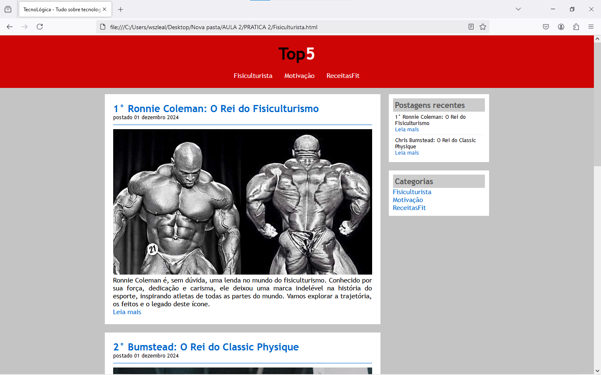
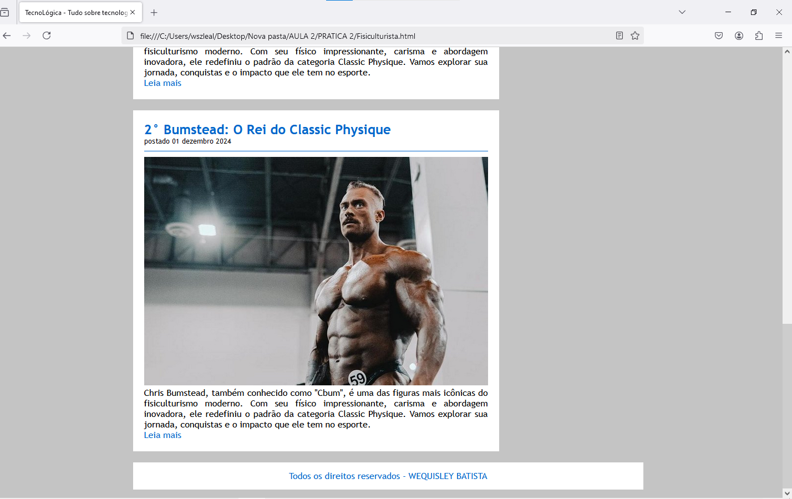

Meu Portifólio
Imagens de um site que eu fiz não hospedado:
Esse site se trata de um blog que eu criei chamado "Top5", nele eu coloquei algumas informações sobre atletas do mundo fitness.
 
Esse site se trata de um blog que eu criei chamado "Top5", nele eu coloquei algumas informações sobre atletas do mundo fitness.